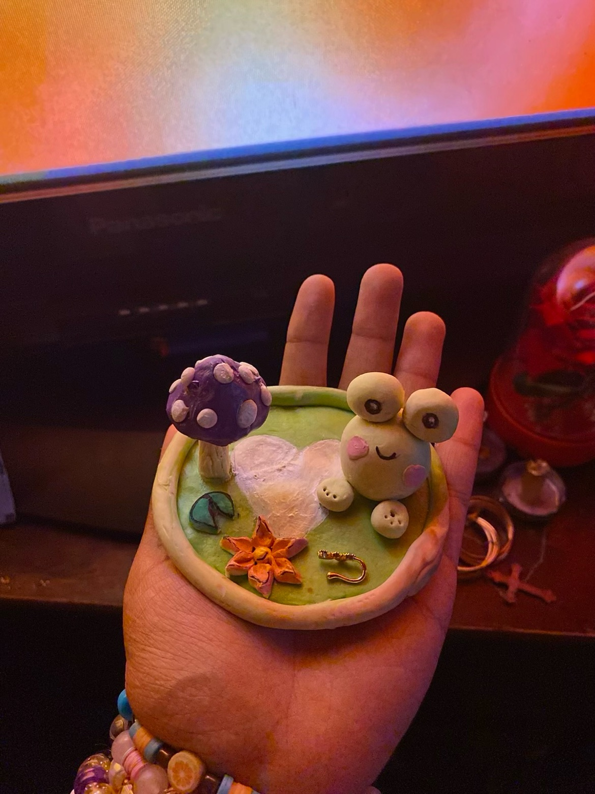

This page holds Zanaiah's artwork — where her art was shown, and the pieces she made at home, gathered by her family.
← Back to her pageThe Bronx Museum of the Arts · 1040 Grand Concourse, at 165th Street, The Bronx
In the spring of 2023, Zanaiah was a member of the Bronx Museum's Teen Council — an intensive, paid after-school program in which teen artists engage deeply with contemporary art and with the museum itself.
Her name appears on the Museum's page for Unmasking Community, an exhibition of art by New York City teenagers, curated by the Teen Council — an exhibition about what community means to today's teens, in their own views.
Handmade pieces she created, being gathered by her family.

More of Zanaiah's artwork exhibits from home will be added here by her family, a piece at a time, as they gather them. Please check back soon.